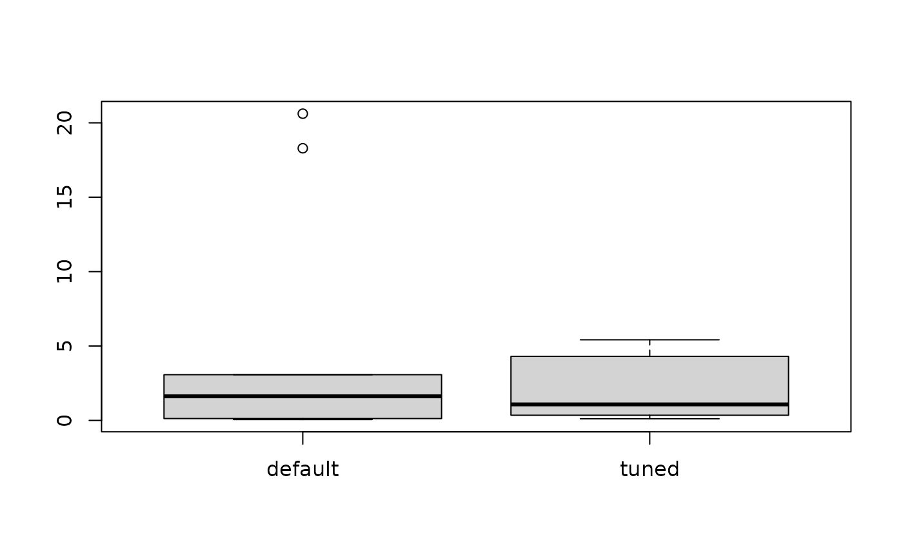

R/irace-package.R
irace-package.RdIterated race is an extension of the Iterated F-race method for the automatic configuration of optimization algorithms, that is, (offline) tuning their parameters by finding the most appropriate settings given a set of instances of an optimization problem. M. López-Ibáñez, J. Dubois-Lacoste, L. Pérez Cáceres, T. Stützle, and M. Birattari (2016) <doi:10.1016/j.orp.2016.09.002>.
License: GPL (>= 2)
Manuel López-Ibáñez, Jérémie Dubois-Lacoste, Leslie Pérez Cáceres, Thomas Stützle, and Mauro Birattari. The irace package: Iterated Racing for Automatic Algorithm Configuration. Operations Research Perspectives, 2016. doi: 10.1016/j.orp.2016.09.002
Manuel López-Ibáñez, Jérémie Dubois-Lacoste, Thomas Stützle, and Mauro Birattari. The irace package, Iterated Race for Automatic Algorithm Configuration. Technical Report TR/IRIDIA/2011-004, IRIDIA, Université Libre de Bruxelles, Belgium, 2011.
Manuel López-Ibáñez and Thomas Stützle. The Automatic Design of Multi-Objective Ant Colony Optimization Algorithms. IEEE Transactions on Evolutionary Computation, 2012.
irace.main to start irace with a given scenario.
Maintainers: Manuel López-Ibáñez and Leslie Pérez Cáceres irace-package@googlegroups.com
####################################################################### # This example illustrates how to tune the parameters of the simulated # annealing algorithm (SANN) provided by the optim() function in the # R base package. The goal in this example is to optimize instances of # the following family: # f(x) = lambda * f_rastrigin(x) + (1 - lambda) * f_rosenbrock(x) # where lambda follows a normal distribution whose mean is 0.9 and # standard deviation is 0.02. f_rastrigin and f_rosenbrock are the # well-known Rastrigin and Rosenbrock benchmark functions (taken from # the cmaes package). In this scenario, different instances are given # by different values of lambda. ####################################################################### ## First we provide an implementation of the functions to be optimized: f_rosenbrock <- function (x) { d <- length(x) z <- x + 1 hz <- z[1:(d - 1)] tz <- z[2:d] s <- sum(100 * (hz^2 - tz)^2 + (hz - 1)^2) return(s) } f_rastrigin <- function (x) { sum(x * x - 10 * cos(2 * pi * x) + 10) } ## We generate 20 instances (in this case, weights): weights <- rnorm(20, mean = 0.9, sd = 0.02) ## On this set of instances, we are interested in optimizing two ## parameters of the SANN algorithm: tmax and temp. We setup the ## parameter space as follows: parameters_table <- ' tmax "" i,log (1, 5000) temp "" r (0, 100) ' ## We use the irace function readParameters to read this table: parameters <- readParameters(text = parameters_table) ## Next, we define the function that will evaluate each candidate ## configuration on a single instance. For simplicity, we restrict to ## three-dimensional functions and we set the maximum number of ## iterations of SANN to 1000. target_runner <- function(experiment, scenario) { instance <- experiment$instance configuration <- experiment$configuration D <- 3 par <- runif(D, min=-1, max=1) fn <- function(x) { weight <- instance return(weight * f_rastrigin(x) + (1 - weight) * f_rosenbrock(x)) } res <- stats::optim(par,fn, method="SANN", control=list(maxit=1000 , tmax = as.numeric(configuration[["tmax"]]) , temp = as.numeric(configuration[["temp"]]) )) ## New output interface in irace 2.0. This list may also contain: ## - 'time' if irace is called with 'maxTime' ## - 'error' is a string used to report an error ## - 'outputRaw' is a string used to report the raw output of calls to ## an external program or function. ## - 'call' is a string used to report how target_runner called the ## external program or function. return(list(cost = res$value)) } ## We define a configuration scenario by setting targetRunner to the ## function define above, instances to the first 10 random weights, and ## a maximum budget of 'maxExperiments' calls to targetRunner. scenario <- list(targetRunner = target_runner, instances = weights[1:10], maxExperiments = 500, # Do not create a logFile logFile = "") ## We check that the scenario is valid. This will also try to execute ## target_runner. checkIraceScenario(scenario, parameters = parameters) #> # 2021-11-25 19:27:21 UTC: Checking scenario #> ## irace scenario: #> scenarioFile = "./scenario.txt" #> parameterFile = "/tmp/RtmpdsUn5N/file46db5de21ff1/reference/parameters.txt" #> execDir = "/tmp/RtmpdsUn5N/file46db5de21ff1/reference" #> logFile = "" #> recoveryFile = "" #> instances = c(0.949576931095124, 0.898052975589976, 0.910406494863153, 0.915158114994512, 0.906132162417802, 0.88495724971745, 0.878288225671879, 0.887177970470628, 0.905393862916816, 0.926318907407635) #> initConfigurations = NULL #> trainInstancesDir = "./Instances" #> trainInstancesFile = "" #> configurationsFile = "" #> forbiddenExps = NULL = expression() #> forbiddenFile = "" #> targetRunner = function (experiment, scenario) { instance <- experiment$instance configuration <- experiment$configuration D <- 3 par <- runif(D, min = -1, max = 1) fn <- function(x) { weight <- instance return(weight * f_rastrigin(x) + (1 - weight) * f_rosenbrock(x)) } res <- stats::optim(par, fn, method = "SANN", control = list(maxit = 1000, tmax = as.numeric(configuration[["tmax"]]), temp = as.numeric(configuration[["temp"]]))) return(list(cost = res$value))} #> targetRunnerLauncher = "" #> targetRunnerLauncherArgs = "{targetRunner} {targetRunnerArgs}" #> targetRunnerRetries = 0 #> targetRunnerData = "" #> targetRunnerParallel = NULL #> targetEvaluator = NULL #> maxExperiments = 500 #> maxTime = 0 #> budgetEstimation = 0.02 #> minMeasurableTime = 0.01 #> digits = 4 #> debugLevel = 2 #> nbIterations = 0 #> nbExperimentsPerIteration = 0 #> sampleInstances = TRUE #> testType = "friedman" #> firstTest = 5 #> eachTest = 1 #> minNbSurvival = 0 #> nbConfigurations = 0 #> mu = 5 #> confidence = 0.95 #> deterministic = FALSE #> seed = NA_character_ #> parallel = 0 #> loadBalancing = TRUE #> mpi = FALSE #> batchmode = "0" #> softRestart = TRUE #> softRestartThreshold = 1e-04 #> testInstancesDir = "" #> testInstancesFile = "" #> testInstances = NULL #> testNbElites = 1 #> testIterationElites = FALSE #> elitist = TRUE #> elitistNewInstances = 1 #> elitistLimit = 2 #> repairConfiguration = NULL #> capping = FALSE #> cappingType = "median" #> boundType = "candidate" #> boundMax = NULL #> boundDigits = 0 #> boundPar = 1 #> boundAsTimeout = TRUE #> postselection = 0 #> aclib = FALSE #> ## end of irace scenario #> # Parameters provided by user. #> # Parameter file '/tmp/RtmpdsUn5N/file46db5de21ff1/reference/parameters.txt' will be ignored #> # 2021-11-25 19:27:21 UTC: Checking target execution. #> # Executing targetRunner ( 2 times)... #> # targetRunner returned: #> [[1]] #> [[1]]$cost #> [1] 9.39892802148754 #> #> [[1]]$time #> [1] NA #> #> #> [[2]] #> [[2]]$cost #> [1] 0.683948028431879 #> #> [[2]]$time #> [1] NA #> #> #> # 2021-11-25 19:27:21 UTC: Check succesful. #> [1] TRUE # \donttest{ ## We are now ready to launch irace. We do it by means of the irace ## function. The function will print information about its ## progress. This may require a few minutes, so it is not run by default. tuned_confs <- irace(scenario = scenario, parameters = parameters) #> # 2021-11-25 19:27:21 UTC: Initialization #> # Elitist race #> # Elitist new instances: 1 #> # Elitist limit: 2 #> # nbIterations: 3 #> # minNbSurvival: 3 #> # nbParameters: 2 #> # seed: 158046124 #> # confidence level: 0.95 #> # budget: 500 #> # mu: 5 #> # deterministic: FALSE #> #> # 2021-11-25 19:27:21 UTC: Iteration 1 of 3 #> # experimentsUsedSoFar: 0 #> # remainingBudget: 500 #> # currentBudget: 166 #> # nbConfigurations: 27 #> # Markers: #> x No test is performed. #> c Configurations are discarded only due to capping. #> - The test is performed and some configurations are discarded. #> = The test is performed but no configuration is discarded. #> ! The test is performed and configurations could be discarded but elite configurations are preserved. #> . All alive configurations are elite and nothing is discarded #> #> +-+-----------+-----------+-----------+----------------+-----------+--------+-----+----+------+ #> | | Instance| Alive| Best| Mean best| Exp so far| W time| rho|KenW| Qvar| #> +-+-----------+-----------+-----------+----------------+-----------+--------+-----+----+------+ #> |x| 1| 27| 24| 0.02783239127| 27|00:00:00| NA| NA| NA| #> |x| 2| 27| 12| 0.06827562966| 54|00:00:00|+0.09|0.54|0.9407| #> |x| 3| 27| 22| 0.4172499491| 81|00:00:00|+0.23|0.49|0.7564| #> |x| 4| 27| 22| 0.3750084393| 108|00:00:00|+0.28|0.46|0.7420| #> |-| 5| 13| 22| 0.3324599234| 135|00:00:00|-0.07|0.15|0.9375| #> |=| 6| 13| 22| 0.4034473360| 148|00:00:00|-0.04|0.13|0.9120| #> |=| 7| 13| 22| 0.9403516044| 161|00:00:00|-0.05|0.10|0.9279| #> +-+-----------+-----------+-----------+----------------+-----------+--------+-----+----+------+ #> Best-so-far configuration: 22 mean value: 0.9403516044 #> Description of the best-so-far configuration: #> .ID. tmax temp .PARENT. #> 22 22 7 31.1499 NA #> #> # 2021-11-25 19:27:23 UTC: Elite configurations (first number is the configuration ID; listed from best to worst according to the sum of ranks): #> tmax temp #> 22 7 31.1499 #> 12 38 47.0209 #> 1 38 66.5720 #> # 2021-11-25 19:27:23 UTC: Iteration 2 of 3 #> # experimentsUsedSoFar: 161 #> # remainingBudget: 339 #> # currentBudget: 169 #> # nbConfigurations: 23 #> # Markers: #> x No test is performed. #> c Configurations are discarded only due to capping. #> - The test is performed and some configurations are discarded. #> = The test is performed but no configuration is discarded. #> ! The test is performed and configurations could be discarded but elite configurations are preserved. #> . All alive configurations are elite and nothing is discarded #> #> +-+-----------+-----------+-----------+----------------+-----------+--------+-----+----+------+ #> | | Instance| Alive| Best| Mean best| Exp so far| W time| rho|KenW| Qvar| #> +-+-----------+-----------+-----------+----------------+-----------+--------+-----+----+------+ #> |x| 8| 23| 38| 0.008677876965| 23|00:00:00| NA| NA| NA| #> |x| 2| 23| 31| 0.5513644195| 43|00:00:00|-0.21|0.40|1.1329| #> |x| 6| 23| 12| 1.179930191| 63|00:00:00|-0.10|0.26|1.0737| #> |x| 4| 23| 1| 1.566891553| 83|00:00:00|+0.01|0.26|0.9445| #> |=| 1| 23| 12| 1.330713659| 103|00:00:00|+0.08|0.27|0.8224| #> |-| 3| 15| 22| 0.9582912984| 123|00:00:00|-0.11|0.08|0.9213| #> |=| 7| 15| 22| 1.415932144| 135|00:00:00|-0.11|0.05|0.9655| #> |=| 5| 15| 22| 1.259223858| 147|00:00:00|-0.10|0.04|0.9497| #> |=| 9| 15| 22| 1.132921709| 162|00:00:00|-0.05|0.07|0.9188| #> +-+-----------+-----------+-----------+----------------+-----------+--------+-----+----+------+ #> Best-so-far configuration: 22 mean value: 1.132921709 #> Description of the best-so-far configuration: #> .ID. tmax temp .PARENT. #> 22 22 7 31.1499 NA #> #> # 2021-11-25 19:27:24 UTC: Elite configurations (first number is the configuration ID; listed from best to worst according to the sum of ranks): #> tmax temp #> 22 7 31.1499 #> 33 11 41.0000 #> 29 6 22.0022 #> # 2021-11-25 19:27:24 UTC: Iteration 3 of 3 #> # experimentsUsedSoFar: 323 #> # remainingBudget: 177 #> # currentBudget: 177 #> # nbConfigurations: 20 #> # Markers: #> x No test is performed. #> c Configurations are discarded only due to capping. #> - The test is performed and some configurations are discarded. #> = The test is performed but no configuration is discarded. #> ! The test is performed and configurations could be discarded but elite configurations are preserved. #> . All alive configurations are elite and nothing is discarded #> #> +-+-----------+-----------+-----------+----------------+-----------+--------+-----+----+------+ #> | | Instance| Alive| Best| Mean best| Exp so far| W time| rho|KenW| Qvar| #> +-+-----------+-----------+-----------+----------------+-----------+--------+-----+----+------+ #> |x| 10| 20| 51| 0.2538528950| 20|00:00:00| NA| NA| NA| #> |x| 9| 20| 51| 0.1438555345| 37|00:00:00|+0.17|0.59|0.8713| #> |x| 8| 20| 29| 0.2803556814| 54|00:00:00|+0.06|0.38|0.9520| #> |x| 7| 20| 33| 0.7675362195| 71|00:00:00|+0.10|0.32|0.8816| #> |=| 3| 20| 33| 0.7172285631| 88|00:00:00|+0.10|0.28|0.8820| #> |=| 6| 20| 29| 0.3705649578| 105|00:00:00|+0.06|0.21|0.8929| #> |=| 4| 20| 60| 1.088964043| 122|00:00:00|+0.04|0.18|0.9084| #> |=| 5| 20| 60| 1.000267714| 139|00:00:00|+0.04|0.16|0.9261| #> |=| 2| 20| 60| 1.097645104| 156|00:00:00|+0.03|0.14|0.9156| #> |=| 1| 20| 60| 1.233177622| 173|00:00:00|+0.02|0.12|0.9159| #> +-+-----------+-----------+-----------+----------------+-----------+--------+-----+----+------+ #> Best-so-far configuration: 60 mean value: 1.233177622 #> Description of the best-so-far configuration: #> .ID. tmax temp .PARENT. #> 60 60 12 45.3833 33 #> #> # 2021-11-25 19:27:26 UTC: Elite configurations (first number is the configuration ID; listed from best to worst according to the sum of ranks): #> tmax temp #> 60 12 45.3833 #> 22 7 31.1499 #> 33 11 41.0000 #> # 2021-11-25 19:27:26 UTC: Stopped because there is not enough budget left to race more than the minimum (3) #> # You may either increase the budget or set 'minNbSurvival' to a lower value #> # Iteration: 4 #> # nbIterations: 4 #> # experimentsUsedSoFar: 496 #> # timeUsed: 0 #> # remainingBudget: 4 #> # currentBudget: 4 #> # number of elites: 3 #> # nbConfigurations: 3 ## We can print the best configurations found by irace as follows: configurations.print(tuned_confs) #> tmax temp #> 60 12 45.3833 #> 22 7 31.1499 #> 33 11 41.0000 ## We can evaluate the quality of the best configuration found by ## irace versus the default configuration of the SANN algorithm on ## the other 10 instances previously generated. ## To do so, first we apply the default configuration of the SANN ## algorithm to these instances: test <- function(configuration) { res <- lapply(weights[11:20], function(x) target_runner( experiment = list(instance = x, configuration = configuration), scenario = scenario)) return (sapply(res, getElement, name = "cost")) } default <- test(data.frame(tmax=10, temp=10)) ## We extract and apply the winning configuration found by irace ## to these instances: tuned <- test(removeConfigurationsMetaData(tuned_confs[1,])) ## Finally, we can compare using a boxplot the quality obtained with the ## default parametrization of SANN and the quality obtained with the ## best configuration found by irace. boxplot(list(default = default, tuned = tuned))  # }